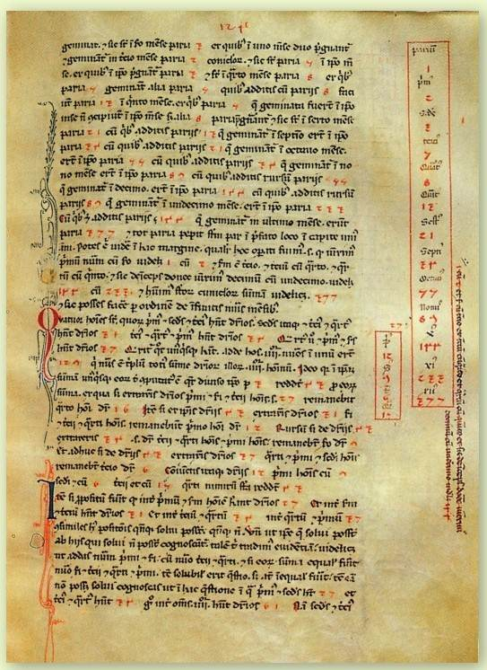
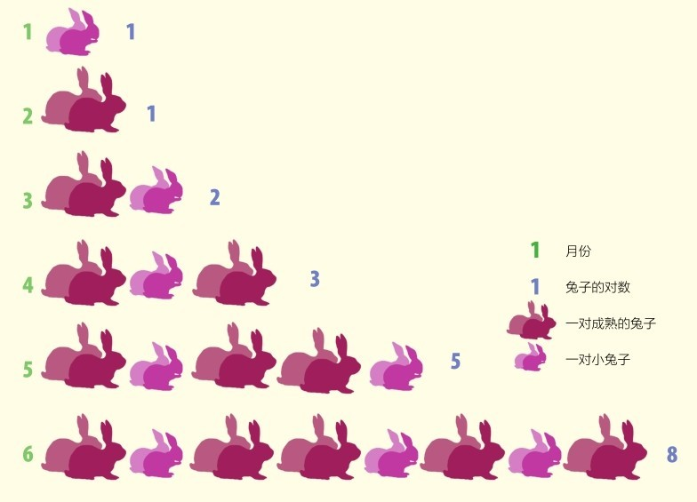
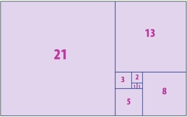
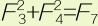
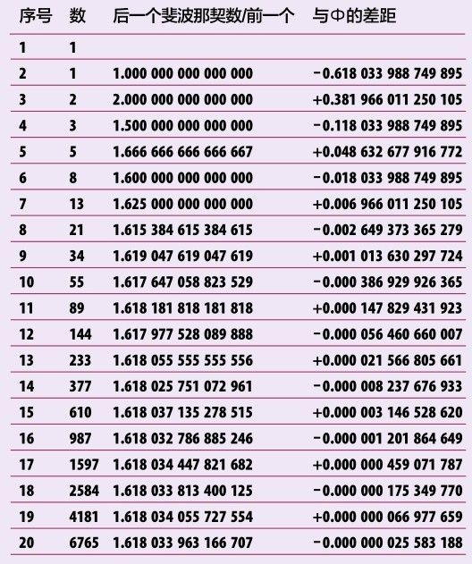

斐波那契数列看似平凡无奇，却对图案和图形“滋养”甚丰，且与大自然关系奇妙。它来自一个兔子之谜。
斐波那契数列以比萨的列奥纳多姓氏的绰号命名。多谢此人，在13世纪为欧洲引入了印度-阿拉伯数字。他姓氏的绰号更为人熟知：斐波那契，意思是“波那契之子”——他的父亲是家乡举足轻重的商贾。

《计算之书》页面边沿的斐波那契数列（阿拉伯数字）。下页的底部是另一个例子，你能指出其中的规律吗？
兔子之谜
我们对斐波那契的数学成就的了解，大多来自他的著作《计算之书》。它是商人的向导，帮助他们计算利润和在不同国家管理融资。斐波那契也在其中融入了他的数学趣味。他讨论了素数和无理数（见第58页和第40页）。而最有名的就是关于兔子的那章，斐波那契展示了如何用数学的方法表达一对兔子传宗接代开枝散叶。他用到的数学知识就是斐波那契数列，该数列除了可用于描述动物的繁衍以外，还告诉了我们很多很多。
何谓数列？
观察斐波那契数列之前，我们得先定义在数学里什么是数列。数列就是一串数字，加入的新数字是由之前的数字计算得来的。最简单的数列就是自然数，从0开始，每个再加1就是下一个数：1， 2，3，4，…。乘法数列也是一样。3的倍数表从0开始，后面每个数再加3：3，6，9，12，…。这些例子是算术数列，也就是说随着数列的增长，相邻两项的差是个常数。也有几何数列，相邻两项的增（减）符合一定规律。一个简单的例子就是用一个因子去乘。用2作为因子的数列2，4，8，16，32，…，相邻两项是两倍的关系——这串数字越往后越大，增长迅速（更多内容参见第76页）。尽管如此，增长的速率是一定的。斐波那契数列既不是算术数列，也不是几何数列，它可特殊了。
阶乘！
斐波那契数列是无穷无尽的，它永远增长，本页提出的算术数列和几何数列也是一样。你可以不断添加新数进去。阶乘是用一个数乘以所有比它小的数（一直到1）。它用“！”表示。所以5！就是5×4×3×2×1=120。阶乘一般是非常大的数：20！有19位，100！有158位。阶乘一般用来表示一串数字（或者其他东西）有多少种排列。比如，如果你有5种不同颜色的筹码，就有120种摆放方式。如果你有20种不同颜色的筹码，就有2432902008176640000种摆放方式。
1,1,2,3,5,8,13,21,34,55,89,144,233,377,610,987,1597,2584,4181, 6765, 10 946, 17 711, 28 657, 46 368, 75 025, 121 393, 196 418, 317 811
兔子繁殖
斐波那契以兔子的数量展示他的数列。最开始有一对小兔子，一个月后成熟。第二个月，母兔妊娠，第三个月，生一对小兔。小兔也花一个月成熟，然后，如同它们的父母，从第三个月开始每月生一对小兔。斐波那契发现每月的兔子数都是前两个月的数量之和。

斐波那契数列就是每个月兔子的对数。
数学养兔
斐波那契数列阐述了兔群数量的增长规律。斐波那契指定了兔子繁殖的一套规律，但是我们没法用它来管理农场——现实中兔子可不是这么繁殖的。虽然如此，斐波那契的例子还是以某种方式展示了这串有趣的数列。从上图你可以看出这套系统是怎么回事。他的例子是这样的：一对兔子生小兔子，小兔子出生一个月之后就有繁殖能力，再过一个月就生一对头胎，此后它们每月都生一对——所生的小兔子也是如此繁殖。斐波那契的兔子数列问题就是：如果年初在田里放一对刚出生的兔子，12个月之后总共有多少兔子呢？
Fn = Fn – 1 + Fn – 2
兔子计数
按照从1月到12月的顺序，斐波那契数列是1，1，2，3，5，8，13，21，34， 55，89和144。一年之后就有144对兔子了。24个月后有46 368对，36个月或者说3年之后有14 930 352对。如果兔子繁殖得这么快，非得有块大田地不可！
斐波那契数
这个数列里的数叫作斐波那契数（Fn）。数列是无穷的，但是并非算术数列，因为斐波那契数之间的间距是不同的；也非几何数列，因为间距不是常数的倍数。那么，我们如何计算斐波那契数呢？下一个数必为之前两数之和，所以， F3就是F1+F2，也就是1+1=2；F4就是F2+F3，也就是1+2=3，如此这般。递推公式是Fn=Fn-1+Fn-2。请注意数列的头两个数字都是1。有的数学家从F0=0算起，设想一开始田里根本没有兔子，然后我们放一对兔子（F1=1），那么接下来F2就是F0+F1，或者说0+1=1。
循环模式
在1之前添补0有助于我们理解斐波那契数列的模式。首先我们观察皮萨诺的列奥纳多发现的皮萨诺周期。这名字听着耳熟吧，因为就是斐波那契这人的别名嘛（译者注：皮萨诺的列奥纳多就是比萨的列奥纳多之别名）。他发现一个模式，就是用某个特定的数除斐波那契数取余数。大多数情况下是不能整除的，所以有余数。比如，用前段的0、1、1、2、3、5、8、13除以3取余数，得到0、1、1、2、0、2、2、1。0、1和2是不能被3整除的，所以余数就是0、1和2（译者注：这里把0也算作不能整除了，通常0作除数没有意义）。用3除5余2，如此这般，得到了由0、1、2组成的数串（见第142页：取模运算）。继续算下面的8个斐波那契数21、34、55、89、144、233、377、610，除以3取余数，得到0、1、1、2、0、2、2、1。关于3的皮萨诺周期是8，因为这串数8个一循环。关于4的周期是6，关于5的周期是20，关于10的周期是60。（奇怪的是，用10除取余数就是斐波那契数的尾数。）每个自然数都有皮萨诺周期，但是，谁也不能指出该如何测算一个数的周期。
比萨的列奥纳多，又名斐波那契，实际上以他名字命名的斐波那契数列并不是他最先研究出来的。在古印度，已经有人用它吟诗了！

黄金矩形（见第46页）中正方形的边长是斐波那契数。
海螺壳越长越宽。据说它也是按照斐波那契数列生长的，但是增长的比例小了些——尽管如此，依然美不胜收。
其他模式
斐波那契数做除法时也有个模式。一个小的斐波那契数能整除大的，当（且仅当）它们相应的序号也能整除。也就是说第四个斐波那契数F4（3）可以整除第八个F8（21），还能整除F12（144）和F16（987）。但是，它不能整除夹在其间的斐波那契数！斐波那契数的增长方式十分奇妙，关乎序号。开头的几个数的平方是1、1、4、9、25、64。我们两两相加，例如，

。你看到了，平方和也是斐波那契数，而且序号（7）就是原来两数的序号之和（3+4）。这些模式是斐波那契数在数学中最初绽放的光彩。黄金关联
斐波那契数与黄金比例有着神秘的联系。黄金矩形中正方形的边长是斐波那契数（见第84页的图），而且它们也与黄金螺旋（见第48页）有关。随着数列的增长，数列中相邻两数的比接近黄金比例Ф或 者1.618033…。此表展示了斐波那契数列中后一个数与前一个数做除法的结果。除了最初的几个数以外，其他的结果跟Ф差不多。这个结果没法精确达到Ф，但是随着数列的增长会与之越来越接近。

参见：
▶黄金比例，第44页
▶数e，第138页